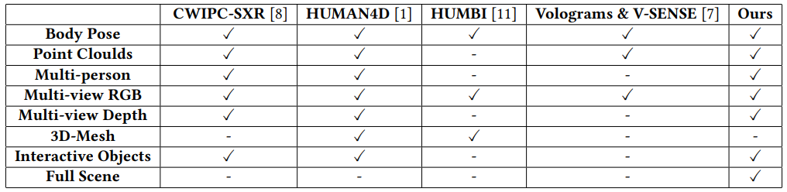
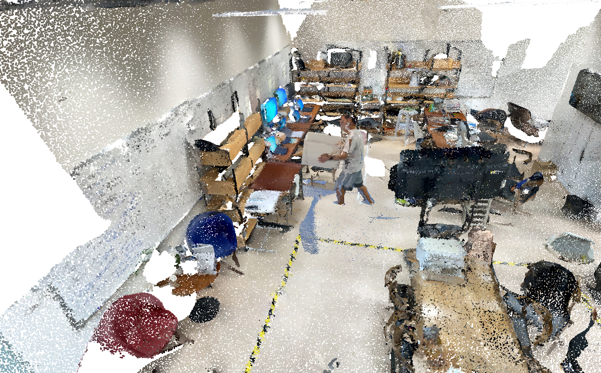

Overview of Daily Scenario Volumetric Video Dataset
Figure 1: Sample frames of the released dataset sequence.
The Daily Scenario Volumetric Video Dataset is the first dataset of volumetric videos depicting the interaction of people in real-life scenarios with external envirnments.
- It contains 100GB+ of volumetric video data, added up to 0.7 million frames.
- The data sequences are captured using 4 RGBD cameras and has been finely post-processed.
- The dataset has a rich diversity of human-human and human-scene interactions under 4 dimensions.
Our dataset can support many research tasks in volumetric video compression, streaming and other areas, for example:
- Virtual & Augmented Reality
- Social Interaction
- Healthcare
- AI Systems
Other Dataset
Here are disparities between our dataset and exist several datasets that provide head movement tracks of users.
Our dataset is the first that contains surrounding environment and human-environment interaction.

Table 1: Existing datasets.
Publications
The following paper describes in depth: from the data collection and processing to detailed statistics about the data. Kindly remind that the usage of Daily Volumetric Video Dataset should be based on a proper cite of this paper.
|  |
Kaiyuan Hu, Yili Jin, Haowen Yang, Junhua Liu, Fangxin Wang
SSE and FNii, The Chinese University of Hong Kong, Shenzhen
Versee Inc. Peng Cheng Laborator FNii-DVVD: A Volumetric Video Dataset for Daily Scenarios 2023. |
@inproceedings{vrdataset,
author = {Yili Jin and Junhua Liu and Fangxin Wang and Shuguang Cui},
title = {Where Are You Looking?: A Large-Scale Dataset of Head and Gaze Behavior for 360-Degree Videos and a Pilot Study},
booktitle = {{MM} '22: Proceedings of the 30th ACM International Conference on Multimedia, Lisboa, Portugal, October 10 - 14, 2022},
publisher = {{ACM}},
year = {2022},
doi = {10.1145/3503161.3548200}
}
Volumetric Videos
Here is a index of content of the dataset
Table 2: Index of Content